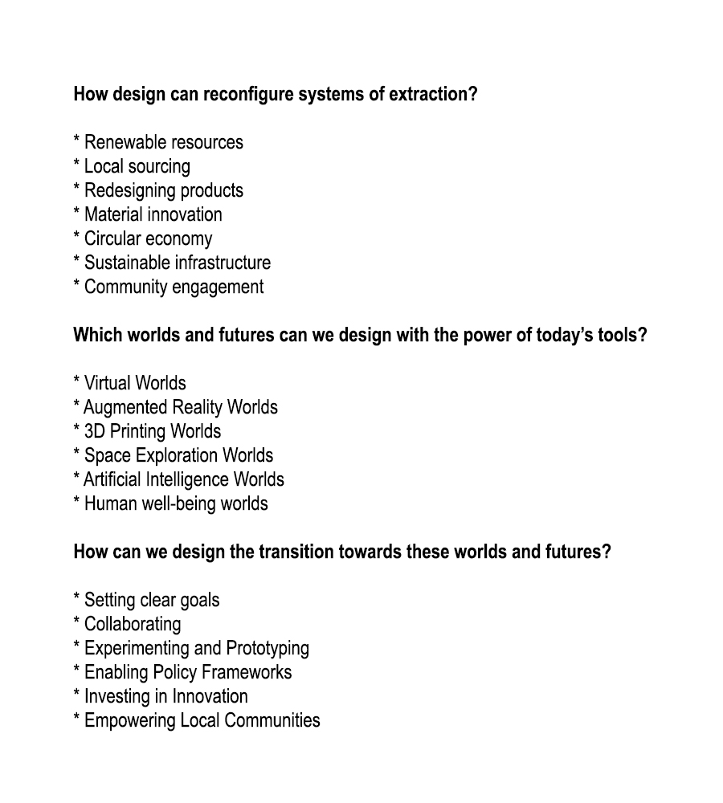

Making Sense and Meaning¶
Making Sense and Meaning
Everything happens so quickly nowadays that it’s difficult to keep up with all the inventions and disasters. The world has changed rapidly in the last 40 years. I remember watching our first black and white television without a remote control, but now I can zip around the city on my mono-wheel without even taking a step. However, it’s important to remember that many communities around the world still don’t have access to basic technologies or even clean drinking water, which are essential for survival.
The origin of the word ‘design’ comes from ‘designare’ in Latin, which means to draw a plan on paper. After architecture, the military, industry, technology, and philosophy, we started to use the word ‘design’ so often in daily life. I believe that the word ‘design’ that we talk about in daily life is mostly the outcome of the industrial revolution, used as an advertising agent to convince and motivate people to consume and buy a lot. Additionally, when we start to talk about today’s tools, the first thing that comes to our minds is mostly about technology, which gives us the opportunity to communicate instantly, even with outer space. However, I am thinking about how accessible technology is and what all of these new technologies promise us. For instance; religions promise believers heaven, feudalism promised safety in resource and food cultivation, and capitalism promises social elevation. Any kind of alternatives should have some promises. What could new technologies and the alternative futures promise be? Are we looking forward to the day when we have personal robots that work instead of us, and will we be able to sail among the stars in total peace without worrying about anything?
I will try to give some answers to three main questions with the help of todays tools and concept of design approaches.
How design can reconfigure systems of extraction?
Design has a significant power to challenge and reconfigure systems of extraction by questioning the dominant narratives of what is considered valuable and by considering the social and ecological implications of production and consumption. In the book “A History of the World in Seven Cheap Things” by Jason Moore, the author explains how the capitalist world system has relied on cheap nature, cheap labor, and cheap energy to fuel the growth of global capitalism. Design can challenge this by questioning the very concept of “cheapness” and reimagining what constitutes value in production and consumption. For example, design can prioritize the use of renewable resources, circular economies, and local sourcing to reduce the extraction of natural resources and the exploitation of labor.
Here are some other ways in which design can help reconfigure systems of extraction at first glance:
Redesigning products: Designers can help reduce the demand for extractive resources by creating products that are designed for longevity, repairability, and reuse. By designing products that can be easily disassembled and repaired, designers can reduce the need for new resource extraction.
Material innovation: Designers can help reduce the environmental impact of resource extraction by developing new materials that are more sustainable and require fewer resources. For example, designers can develop plant-based alternatives to synthetic materials or create new composite materials that are more durable and require fewer resources to produce.
Circular economy: Designers can help create a circular economy that minimizes waste and promotes resource efficiency. By designing products and systems that are designed for reuse and recycling, designers can help reduce the need for new resource extraction.
Sustainable infrastructure: Designers can help create sustainable infrastructure that reduces the need for extractive resources. For example, designers can create buildings that generate their own energy, reduce water consumption, and minimize waste.
Community engagement: Designers can work with local communities to identify their needs and develop solutions that are tailored to their unique circumstances. By engaging with communities that are directly impacted by extractive industries, designers can help create solutions that are more equitable and sustainable.
To sum up, design has the potential to play a significant role in reconfiguring systems of extraction by promoting sustainable practices and reducing the environmental impact of resource extraction.
Which worlds and futures can we design with the power of today’s tools?
Today’s tools, such as digital technology and advanced materials, provide designers with unprecedented capabilities to envision and create new worlds. In the book “Design as Participation” by Kevin Slavin, the author argues that design has the power to shape our social and political realities. Design can be used to imagine and create new social, economic, and political systems that promote social justice, environmental sustainability, and human well-being which is the most important. For example, designers can use virtual and augmented reality to simulate new forms of urban planning or community engagement. They can use advanced materials to create sustainable and resilient infrastructure that responds to the challenges of climate change.
I think that any system designed in advance or that grows over time eventually starts to behave like a living organism, searching for alternative ways to sustain itself. For example, the transition from feudalism to capitalism was facilitated by the production of sugar in Madeira. The island’s forests were destroyed to cultivate sugarcane and use it as a fuel source. When the forests were depleted, new solutions were invented, such as cultivating grapes and supplying cheap wood from new markets. As Raj Patel and Jason W. Moore argue in the their book “A History of the World in Seven Cheap Things”, ‘Suppose we consider capitalism as an illness; then, it is a disease that consumes your body and profits from selling your remains as fertilizer. The profits earned from selling the fertilizer are then invested in cultivating sugarcane and selling it to visitors who pay to see your grave.’
Here are more examples of the worlds and futures that we can design with today’s tools:
Virtual Worlds: With the advancement of technology, we can now design and create virtual worlds that are incredibly realistic and immersive. These worlds can be used for entertainment, education, and even training.
Augmented Reality Worlds: Augmented reality (AR) allows us to overlay digital content onto the real world. We can design AR worlds that enhance our surroundings, such as adding information to a museum exhibit or creating an interactive game in a park.
3D Printing Worlds: 3D printing technology has given us the power to create physical objects from digital designs. With 3D printing, we can design and create entire worlds, such as miniature models of cities or landscapes.
Space Exploration Worlds: With the help of space exploration tools, we can design and explore worlds beyond our own. We can use telescopes, rovers, and other tools to explore other planets, moons, and even asteroids.
Artificial Intelligence Worlds: Artificial intelligence (AI) has the power to create intelligent agents that can interact with their environment. With AI, we can design and create worlds where these agents can learn and evolve, such as in simulation environments or video games.
Human well-being worlds: Design can be used to create a human well-being future with today’s tools by focusing on designing with and for people, rather than simply designing for profit or aesthetics. As Kevin Slavin called this approach “Design as Participation”, involves actively involving people in the design process and empowering them to shape the products and services that affect their lives. According to Slavin, “Design as Participation is a way of working that acknowledges and responds to the reality of an interconnected world, where the inputs and outputs of a design are entangled with everything else.” This means that designers must consider the broader social, economic, and environmental impact of their designs, and actively engage with the communities they are designing for. One example of Design as Participation in action is the “Trash Track” project, which was created by the MIT Sensible City Lab. This project used GPS-enabled devices to track the movement of trash through the city, allowing people to better understand the environmental impact of their waste and make more informed decisions about their consumption habits. By involving people in the design process and using technology to create more transparent and participatory systems, Design as Participation has the potential to create a more sustainable, equitable, and human-centered future.
In conclusion, with the power of today’s tools, we can design and create a wide range of worlds limited only by our creativity and imagination. Unfortunately, the capacity of “design” and “todays tools” that we know and talk about today is not only a result of systems such as capitalism, feudalism, and technology, but is also largely a product of the Industrial Revolution. While the concept of design may have no limit, our personal imaginations and creativity do have limits. Perhaps the concept of a collective-collaborative minds work better in terms of creativity and has more capacity and tools. On the other hand, technology, which is supposed to serve people, causes, supports, and makes every single person on the planet live, act, and behave more individually. In other words, I am doubtful about the role and power of “design” and “”todays tools” in terms of alternative ways of living, which are supposed to be better.
How can we design the transition towards these worlds and futures?
Designing the transition towards more sustainable and just worlds requires a shift from traditional design approaches that focus on products and services to participatory design approaches that engage diverse stakeholders in the design process. In the book “Steps to an Ecology of Mind” by Gregory Bateson, the author argues that the key to creating more sustainable and resilient systems is to focus on the relationships between different elements and actors in the system. Design can facilitate this by engaging diverse stakeholders in the design process, including marginalized communities, workers, and environmental groups. By involving these groups, designers can create more inclusive and equitable systems that respond to the needs and aspirations of all members of society.
Moreover, to design a transition towards the worlds and alternative futures we want requires a deliberate and strategic approach. Here are some steps that can help facilitate the transition:
Set clear goals: To design a transition towards the desired future, we must first establish clear goals and objectives. These goals should be specific, measurable, and actionable, and should reflect the vision for the future.
Collaborate: Achieving the desired future will require collaboration across different stakeholders, including governments, businesses, civil society, and individuals. Collaboration should be fostered through partnerships, co-creation, and open dialogue.
Experiment and Prototype: The design of the transition should be iterative, with experiments and prototypes testing and refining ideas before scaling. This approach will allow us to learn from failures and successes, and adjust course as needed.
Enable Policy Frameworks: Governments and other policymakers should create the enabling policy frameworks to support the transition. This could include regulations, incentives, and other policy tools to promote sustainable development, social inclusion, and technological innovation.
Invest in Innovation: To facilitate the transition, there is a need for investment in innovation and research and development. This could include investments in new technologies, business models, and social innovations that support the desired future.
Empower Local Communities: Local communities play a critical role in the transition towards the desired future. Empowering them to participate in the design and implementation of the transition will help to ensure that the transition is inclusive and equitable.
As a result, designing the transition towards the worlds and alternative futures we want requires a collaborative and inclusive approach, with a focus on experimentation, innovation, and policy frameworks that support the transition.
Personal Note;
Cash is king, and capital is power, but what was the source of power before that? Physical power? Success? Heritage? There are various sources of power, including physical power for protection and defense, communal power for protection of family, tribe and land, religious power, financial power, resource power, and information-technology power. In all cases, demand and supply also play a key role. What about the power of colonialism? While we criticize the colonial attempts of Europe, many people around the world are trying to obtain a passport from the European Union today. What is the motivation behind that? I believe that, more than the American dream of becoming rich easily, the main motivation and need of human beings is safety. People feel safer within the borders of the European Union than anywhere else. Maybe, first of all it is better to analyze the source of that feeling of safety within the European Union.

References:
-
Moore, J. W., & Patel, R. (2017). A history of the world in seven cheap things
-
Slavin, K. (2018). Design as participation.
-
Bateson, G. (1972). Steps to an ecology of mind.